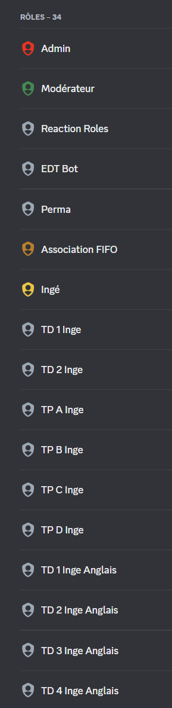
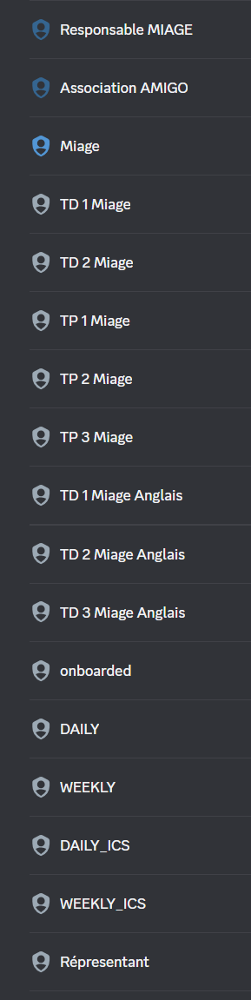
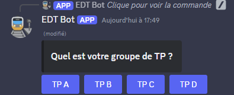
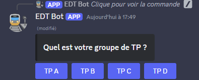
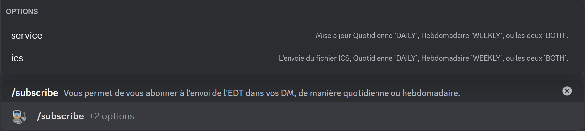
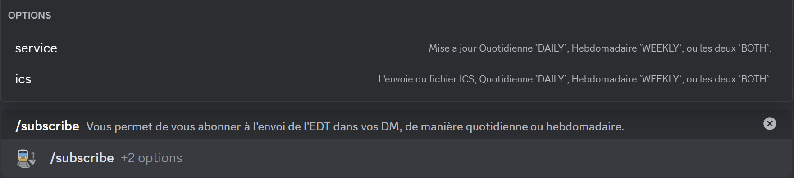
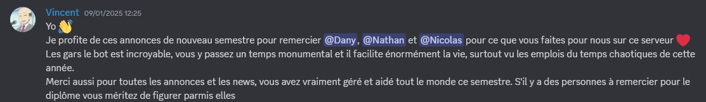
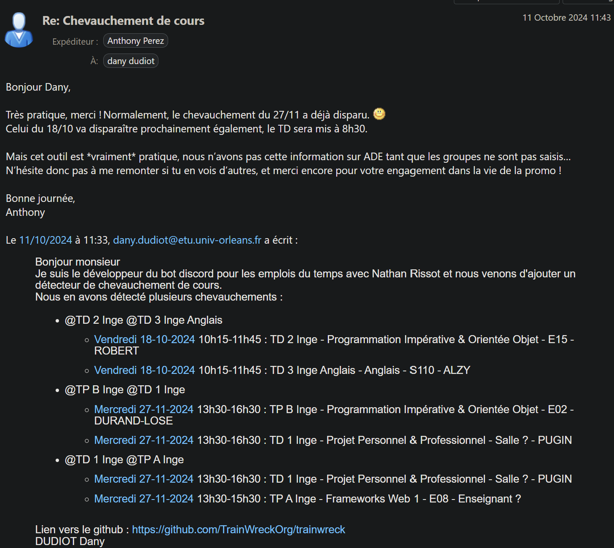
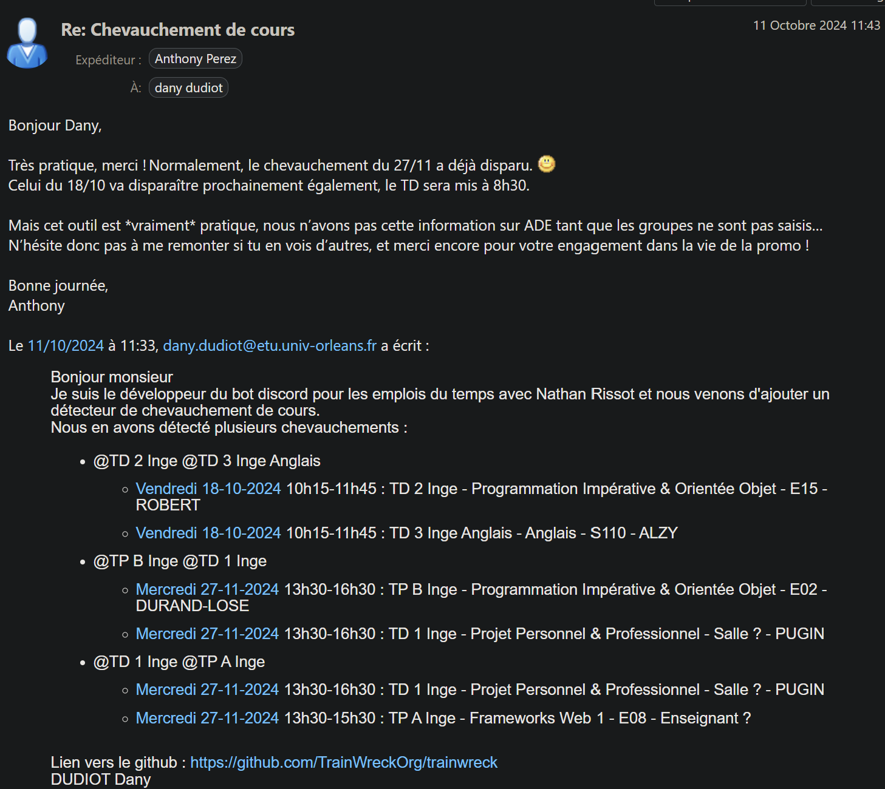

EDT Bot est un bot discord qui permet aux étudiant de L3 d'informatique de l'université d'Orléans d’accéder à leur emploi du temps personnalisé.
EDT Bot
Eté 2024 - Projet Personnel - Python, Git
Pourquoi
Depuis la L2, l’emploi du temps est horrible
- Pour y avoir accès, il faut se connecter, parcourir un grand nombre de dossier, et enfin trouver le bon parmi certain vide, quand ce système ne bug pas, ou bien inaccessible
- Pour avoir un emploi du temps personnel, il faut compter environ 2 mois, en encore il manque des cours dessus
- La L3 à deux filières : Au début de notre L3 nous nous sommes rendu compte que les cours en commun entre Ingé et Miage apparaissait sur les deux emplois du temps ce qui portait facilement à confusion.

Solution
Tout a commencé grâce à Nathan Rissot qui voulais se faire un simple script qui prend un fichier ICS avec tous les événements et en ressort un fichier avec uniquement les bons cours.
Mais Nathan a eu la terrible idée de m’en parler, et je lui ai proposer de faire un bot Discord afin que les autres étudiants puissent en profiter facilement.
Nathan c’est occuper de la partie traitement des fichiers ICS et qui en parle très bien sur son site.
De mon côté, je me suis principalement occupé de la partie discord. J’ai donc utilisé interaction.py, une librairie python qui permet de se servir de l’API discord facilement.
Les Rôles
Pour que tout le monde puisse s’en servir, il fallait donc avoir les groupes de TD et TP, j’ai donc opté pour une solution simple des rôles sur le discord de promo que nous dirigions.


Pour que les autres étudiants puissent remplir leurs rôles, j’ai fait un système dans lequel qui n’ont y a répond une seul fois à 4 questions maximum, l’objectif était de le rendre simple comparer au système de l’université.


 

Commandes
Pour les commandes, j’ai commencé par faire des commandes simples, tel que
- /today : Pour avoir l’emploi du temps d’aujourd’hui
- /week : Pour avoir l’emploi du temps de la semaine
Une fois arrivée à ce niveau, je me suis dit que les commandes sur le serveur, n’étais pas forcément les plus pratique, c’est pour ça que j’ai voulu les faires fonctionnes en MP (message privée), mais le problème c’est que sur le serveur les membres ont leurs rôles en revanche en MP, ils ne sont plus accessibles c’est pourquoi nous avons dû crée une petite base de données afin de pouvoir accès aux rôles en MP.
Les abonnements
Une fois les commandes faites, vue que nous sommes développeur, nous avons crée un système d’abonnement qui enverrai automatiquement l’emploi du temps.
J’ai commencé par trouver un moyen de déclencher une tache automatique et heureusement la librairie le proposait avec les Tasks, ensuite, les abonnements sont stockés par des rôles Discord qui sont mit dans la base de données.
Ensuite nous avons ajouter l’option de pouvoir avoir aussi un fichier ICS, ce qui étais plutôt simple car tout le fonctionnement existait déjà.*
 

Les changements de cours
L’année dernière, il arrivait souvent que des modifications d’emploi du temps soit faite moins de 24H avant le cours, ce qui pouvait être compliquer à voir pour certain.
C’est pour cela que nous avons ajouter un détecteur, qui nous permettrais de trouver les ajouts, suppression et modification, et de reporter tout ça dans un salon sur notre serveur.

Durant ma L3, à deux reprises des Miage se son plaint que des cours se chevauchais, c’est pourquoi, j’ai ajouté un détecteur de chevauchement de cours afin de pourvoir, remonter l’information aux enseignants qui tant que les groupes ne sont pas former sur le système de l’université ne peuvent pas être averti.
Les examens et les arguments
Au début, nous avions prévu d’ajouter un système pour prendre en charge les examens, ne sachant pas à l’avance comment ça allait se passer nous avons ajouté un système basique mais pas vraiment pratique directement dans le code, il fallait donc écrire en dur, les examens ce qui n’est pas une bonne idée.
J’ai donc pensé à passer des arguments par un salon privée dans un message, ce qui fonctionnais bien au début mais discord limite les messages à 2000 caractères ce qui est vite atteint.
Je me suis donc rabattu sur un fichier (discord limitant à 10 Mo, il y a plus de marge), j’ai donc essayé de mettre un fichier dans un salon et le télécharger mais discord ne voulais pas et me renvoyais une erreur 403 Forbidden, j’ai donc cherché sur internet, et j’ai trouvé comment faire.
Grâce à ce système de fichier, j’ai pu ajouter d’autre option :
- Tagger des événements en tant qu’examen
- Ajouter un événement spécial qui est différent d’un examen, par exemple, nous avons un forum avec des entreprises, des réunions.
- Ajouter une description à un événement, afin de préciser une information.
- Ajouter un événement, par exemple un examen qui n’a pas de créneaux sur l’emploi du temps ?
- Modifier un événement, par exemple, un cours est décalé, change de salle ou d’enseignant.
- Supprimer des événements, en réalité, ça ne supprime pas vraiment mais marque qu’il à été supprimée, par exemple, un enseignant qui nous envoie un mail à 22H30 pour annulée le cours prévu à 8H.
- Désactiver la notification d’un chevauchement, le problème c’est que les éléments son mise à jour toutes les 2H environs, donc à chaque fois un message serait envoyé ce qui serait dérangeant.
- La désactivation de l’envoi automatique, qui est utile pendant les vacances pour éviter d’envoyer des messages.
- La possibilité de désactiver la mise à jour des événements, par exemple, lorsque l’université prévoit une mise à jour de son système, nous désactivons la mise à jour ce qui nous laisse le temps de vérifier si le "parseur" fonctionne toujours.

L’université
Dans un monde merveilleux, l’université ne changerais pas ça manière de formatter ces fichier ICS, mais le monde est cruel.
C’est pourquoi, de temps en temps, l’université décide de changer un peu le format, et donc casse notre "parseur", ce qui nous oblige à le réparer en urgence.
Hébergement
Une fois une première version du bot réaliser, le problème de l’hébergement c’est pose car ni Nathan, ni moi, n’avons un serveur, nous avons cherché, et nous étions parti sur l’idée, de l’héberger sur un vieux téléphone car python peut fonctionner sur Android, mais c’est à ce moment que Vincent Gonnet, un camarade, nous gentiment proposer de l’héberger sur son serveur.
Un fois héberger, nous avons pu constater des bugs que nous avons résolu.
La rentrée
Durant l’été, nous avons crée très tôt, un serveur discord pour la L3 informatique car les années précédentes, il y en avait plusieurs et donc les informations avais du mal à circuler, c’est pour ça que durant les réunions de rentrée, nous avons fait la promotion de notre serveur et le bot ce qui nous a permit d’avoir une très grande majorité des étudiants dessus.
Nous avons eu des retours et le bot est très appréciée.
Nos enseignants
Nous avons également présenté, notre travail à nos enseignants qui nous ont félicité pour le travail que nous avons fait.
 
